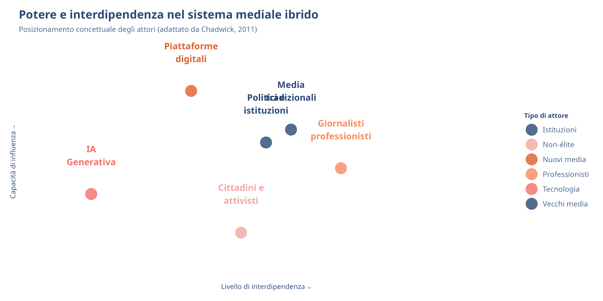
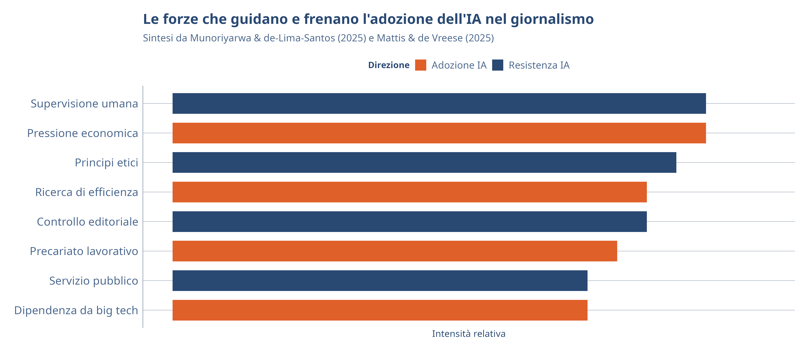

Il Sistema Mediale Ibrido nell’Era dell’IA
IA Generativa e Media — Settimana 1
DISCUI · Università degli Studi di Urbino Carlo Bo
24 febbraio 2026
Roadmap della lezione
- L’ontologia dell’ibridità — un nuovo modo di pensare i media
- Il sistema mediale ibrido — il framework di Chadwick
- Il ciclo dell’informazione politica — come si costruiscono le notizie oggi
- Il giornalismo nell’era dell’IA — trasformazioni della catena del valore
- Potere, agentività e autorità — chi decide cosa nel sistema ibrido
- Prossimi passi — workshop di domani
L’Ontologia dell’Ibridità
Pensare in termini di ibridità
Ibridità: un modo di vedere il mondo che evidenzia complessità, interdipendenza e transizione. Cattura l’eterogeneità e ciò che non è riducibile a essenze semplici e unificate (Chadwick, 2011).
L’ibridità ci spinge a superare le dicotomie rigide:
- Non “vecchi OPPURE nuovi media”, ma interazione tra i due
- Non sostituzione, ma coesistenza complessa
- Attenzione alle continuità tra vecchio e nuovo
L’ibridità nelle scienze sociali
| Disciplina | Applicazione | Principio chiave |
|---|---|---|
| Scienza politica | Regimi ibridi | Coesistenza di pratiche democratiche e autoritarie |
| Governance | Regolamentazione ibrida | Mix di mercato, stato e auto-regolazione |
| Organizzazioni | Strutture ibride | Gerarchia e rete coesistono |
| Studi culturali | Culture ibride | Resistenza attraverso l’adattamento selettivo |
| Sociologia della scienza | Actor-Network Theory | Reti sociotecniche di umani e non-umani |
Adattato da Chadwick (2011)
Ibridità “particolata”
Ibridità “diluita”
Gli ibridi sono versioni attenuate dei loro antecedenti.
Un semplice mix senza novità reale.
Ibridità “particolata”
Le caratteristiche degli antecedenti vengono ricombinate selettivamente in modi nuovi.
Gli ibridi sono riconoscibili per le loro origini, ma sono anche genuinamente nuovi.
Concetto chiave: L’ibridizzazione è un processo di integrazione e frammentazione. Elementi contraddittori possono costituire un insieme significativo, senza mai risolversi completamente (Chadwick, 2011).
Il Sistema Mediale Ibrido
Definizione del sistema mediale ibrido
Il Sistema Mediale Ibrido
Il sistema mediale ibrido è costruito sulle interazioni tra vecchi e nuovi media e le loro tecnologie, generi, norme, comportamenti e organizzazioni associate. Gli attori sono articolati da relazioni di potere complesse e in evoluzione basate su adattamento e interdipendenza (Chadwick, 2011).
Dal ciclo delle notizie al ciclo dell’informazione politica
Ciclo tradizionale delle notizie
- Controllato da pochi attori d’élite
- Politici, comunicatori, giornalisti
- Flusso lineare e prevedibile
- Tempi scanditi dalla stampa e dai TG
Ciclo dell’informazione politica
- Attori più numerosi e diversificati
- Include cittadini, attivisti, blogger
- Strutture temporali complesse
- Iterazione e ricorsione cross-platform
Gli assemblage della produzione di notizie
“Gli assemblage della produzione di notizie sono composti da molteplici individui, gruppi, siti e istanze temporali di interazione, debolmente accoppiati ma altamente interdipendenti, che si connettono e disconnettono dal processo, spesso in tempo reale.”
— Chadwick (2011)
Caratteristiche principali:
- Confini permeabili tra moduli diversi
- Attori non-élite possono contestare i frame dei media tradizionali
- I broadcaster integrano sempre più informazioni dal mondo online
- La produzione di notizie è un processo fluido e dinamico
Da WikiLeaks all’IA: continuità e discontinuità
Da discutere
WikiLeaks era un attore ibrido che combinava tecnologia, attivismo e giornalismo. L’IA generativa è un attore ancora più ibrido: produce contenuti, simula identità, interagisce con utenti. Quali sono le continuità e le discontinuità tra i due fenomeni?
Potere e interdipendenza nel sistema ibrido
WikiLeaks: un caso esemplare di ibridità
WikiLeaks come attore ibrido
- Parte editore, parte movimento sociale
- Parte piattaforma tecnologica
- Infrastruttura crittografica distribuita
- Rete di attivisti, hacker, giornalisti
La collaborazione con i media
- Partnership con Guardian, NYT, Der Spiegel
- Interdipendenza: WikiLeaks forniva i dati, i giornali la legittimità
- Nessuno dei due poteva operare da solo
- Risultato: “assemblage” ibrido di risorse
Chadwick analizza WikiLeaks come esempio paradigmatico del sistema mediale ibrido (Chadwick, 2011).
Il Giornalismo nell’Era dell’IA
L’IA come “motore di cambiamento istituzionale”
L’IA generativa non è semplicemente un nuovo strumento: è un fattore di cambiamento istituzionale che trasforma norme e pratiche condivise del giornalismo (Mattis & Vreese, 2025).
Cosa sta cambiando
- Processi decisionali editoriali
- Dinamiche interne alle redazioni
- Ruoli professionali tradizionali
- Standard di qualità giornalistica
Cosa resta (per ora)
- Il principio dell’human-in-the-loop
- L’aspirazione alla trasparenza
- Il ruolo di watchdog
- L’autorità epistemica del giornalismo
La catena del valore giornalistica sotto pressione
| Fase | Uso dell’IA | Rischio per la disinformazione |
|---|---|---|
| Raccolta | Aggregazione automatica, analisi trend | Perdita di controllo editoriale sulle fonti |
| Produzione | Scrittura, traduzione, editing | Errori, bias, hallucination nei contenuti |
| Verifica | Fact-checking automatizzato | Accuratezza insufficiente dei modelli |
| Distribuzione | Personalizzazione, chatbot | Frammentazione e bolle informative |
Adattato da Mattis & Vreese (2025)
I quattro rischi per la disinformazione
Quattro rischi chiave emergono dall’adozione dell’IA nel giornalismo (Mattis & Vreese, 2025):
- Perdita di controllo editoriale — le decisioni passano a modelli opachi
- Diminuzione della qualità — errori, bias, hallucination
- Pressioni economiche aggravate — dipendenza dalle piattaforme tech
- Erosione della fiducia del pubblico — scetticismo verso contenuti IA
Attenzione
Questi rischi non sono indipendenti: la pressione economica spinge ad adottare l’IA in modo irresponsabile, il che riduce la qualità e la fiducia del pubblico.
Il “paradosso della trasparenza”
Il principio
Le testate giornalistiche dovrebbero dichiarare l’uso dell’IA per rispettare norme di trasparenza.
Il 76% del pubblico vuole sapere se un contenuto è generato dall’IA.
Il paradosso
Le AI disclosure tendono a ridurre la fiducia nei contenuti etichettati, anziché aumentarla (Mattis & Vreese, 2025).
Le testate sono in una doppia trappola: opacità o penalizzazione.
Potere, Agentività e Autorità
Tre temi chiave nel sistema ibrido dell’IA
Dall’analisi di contesti giornalistici globali emergono tre temi intrecciati (Munoriyarwa & de-Lima-Santos, 2025):
| Tema | Descrizione |
|---|---|
| Riconfigurazione dell’agentività | Il processo decisionale si sposta progressivamente verso sistemi tecnologici |
| Rinegoziazione del potere | Cambia l’equilibrio tra redazioni, industria tech e regioni globali |
| Contestazione dell’autorità | Supervisione umana, etica e accountability difese come salvaguardie |
L’human-in-the-loop come principio fondante
“In quasi tutti i contesti analizzati — dal giornalismo scientifico tedesco alle redazioni svizzere, dagli ambienti africani a quelli rumeni — i giornalisti sono fermi: l’IA deve restare uno strumento sotto il controllo umano.”
— Munoriyarwa & de-Lima-Santos (2025)
L’human-in-the-loop funziona come una polizza assicurativa per salvaguardare l’autorità giornalistica nell’era dell’IA.
Il divario digitale dell’IA
Global North
- Sperimentazione attiva con IA
- Dibattito su autonomia editoriale
- Accesso a strumenti proprietari avanzati
- Focus su collaborazione umano-IA
Global South
- Spesso importatori di tecnologia IA
- Vincoli finanziari e infrastrutturali
- IA come necessità per sopravvivenza
- Rischio di amplificare la disinformazione
Le tecnologie IA delle big tech non coprono le lingue minoritarie del Sud globale (Munoriyarwa & de-Lima-Santos, 2025).
La tensione tra economia e valori
Verso un modello ibrido di giornalismo con IA
L’impatto dell’IA sul giornalismo non è deterministico ma contingente: dipende da norme istituzionali, economie politiche e realtà locali (Munoriyarwa & de-Lima-Santos, 2025).
Tre scenari possibili (Thäsler-Kordonouri & Koliska, 2025, citati in Munoriyarwa & de-Lima-Santos, 2025):
- Modello centrato sull’attore — controllo umano prevalente
- Modello ibrido — collaborazione umano-IA bilanciata
- Modello centrato sull’attante — l’IA guida le decisioni
Da discutere
Quale modello pensate sia più probabile per il giornalismo italiano nei prossimi 5 anni?
L’IA nel sistema mediale ibrido: una mappa concettuale
Integrare i framework
Chadwick (2011)
- Sistema mediale ibrido
- Interazione vecchi/nuovi media
- Relazioni di potere e interdipendenza
- Ciclo dell’informazione politica
- Assemblage della produzione di notizie
Aggiornamenti per l’era IA
- L’IA come nuovo attante nel sistema
- Catena del valore giornalistica sotto pressione (Mattis & Vreese, 2025)
- Tre temi: agentività, potere, autorità (Munoriyarwa & de-Lima-Santos, 2025)
- Human-in-the-loop come principio-guida
- Tensione economia-valori irrisolta
L’IA amplifica l’ibridità del sistema mediale
| Caratteristica di Chadwick | Come l’IA la amplifica |
|---|---|
| Interazione vecchi/nuovi media | L’IA opera attraverso sia vecchi che nuovi media |
| Confini permeabili | L’IA rende i confini tra umano e macchina ancora più porosi |
| Relazioni di potere | L’IA introduce un nuovo attore con capacità senza precedenti |
| Interdipendenza | Le testate dipendono sempre più da infrastrutture IA esterne |
| Assemblage fluidi | I contenuti IA si inseriscono negli assemblage a tutti i livelli |
Sintesi e Prossimi Passi
Concetti chiave di oggi
- Il sistema mediale ibrido è costruito su interazioni tra vecchi e nuovi media (Chadwick, 2011)
- L’ibridità particolata produce forme genuinamente nuove, non semplici mix
- Il ciclo dell’informazione politica sostituisce il ciclo lineare delle notizie
- L’IA trasforma la catena del valore giornalistica in tutte e 4 le fasi (Mattis & Vreese, 2025)
- Quattro rischi: perdita di controllo, calo qualità, pressione economica, erosione fiducia
- L’human-in-the-loop è il principio difensivo più condiviso globalmente (Munoriyarwa & de-Lima-Santos, 2025)
Letture della settimana (assegnate lunedì)
Obbligatorie
Suggerimento
Portate tutte le letture al workshop di domani: le caricheremo su NotebookLM per un esercizio pratico di analisi assistita dall’IA.
Per il workshop di domani
Mercoledì 25 Febbraio: Workshop pratico — Google Gemini & NotebookLM
Cosa faremo
- Esplorare Gemini (testo, immagini, analisi)
- Creare un notebook con le letture del corso
- Sperimentare l’Audio Overview
- Prompt design: regole di base
Cosa preparare
- Verificare accesso @uniurb.it a Gemini
- Scaricare i PDF delle letture
- Portare un laptop con browser aggiornato
Attenzione
Se non avete ancora verificato il vostro accesso a Gemini e NotebookLM, fatelo oggi.
Grazie!
Prossima lezione: Workshop Google Gemini & NotebookLM (25 Febbraio 2026)
📧 fabio.giglietto@uniurb.it
🌐 blended.uniurb.it
Riferimenti

IA Generativa e Media · A.A. 2025/2026